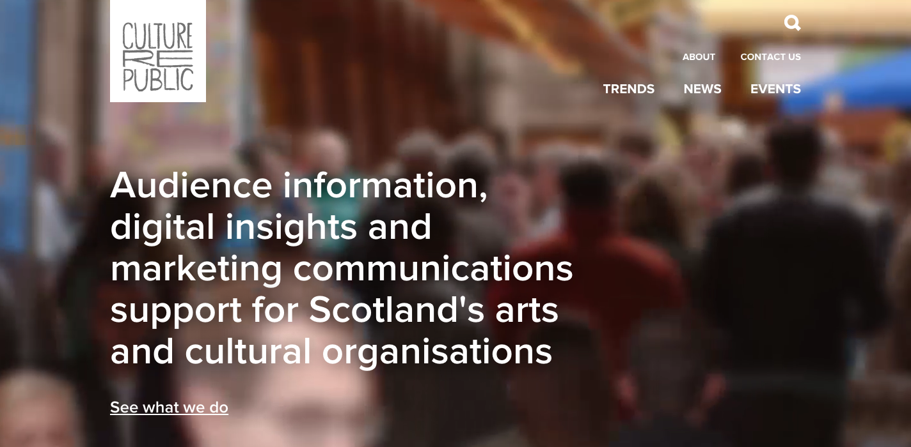

Developer / Marketer / Musician / Father
I have 4 years experience in digital marketing and managing ecommerce sites where writing and maintaining code has been a big part of my job. I'm now at a stage where I have completed several professional web projects and want to focus my career on front end web development. I love working with JavaScript and spend most of my free time writing, reading or thinking about code.
Employment
Feb 2014 - Present:
Senior Digital Executive at RedefineBDL

In my current role I support websites for 75 hotels and brands including Crowne Plaza, Holiday Inn, Ramada and others. This includes front end design changes, creating custom content, ad hoc bug fixes and general support. Working with HTML, SASS, jQuery, PHP/MySQL (Joomla)
In the same role, I am currently developing a bespoke reporting suite that pulls data from Google Analytics and Google Adwords alongside various in-house data sources (accounts databases, CSV exports etc.):
- AngularJS for dynamic front end UI
- ChartsJS for graphs
- NodeJS for all data processing / serving
- Heavy use of _lodash library for functional programming
- Jasmine for TDD and unit testing
- HTML / CSS (with SASS) for styling
- modular, mobile-first approach
- Google Analytics API, Adwords API and Adwords Scripts (JavaScript)
This provides various dashboards and reporting views for reporting to multiple stakeholders withing the company and at the hotels.
Mar 2011 - Feb 2014:
Senior Digital Associate at Culture Republic
Developed and maintained a bespoke social listening tool to collect social media metrics and content from 500 arts and culture organisations across Scotland. Technologies used:
- Custom JavaScript functions running in Google Spreadsheets
- Multiple web APIs (Twitter, Facebook, YouTube, Klout, Google Docs, etc.)
- PHP/MySQL for simple data storage and aggregation
This also included automated generation of digital reports for clients. These solutions formed the basis of the company's digital reporting services that were a key client benefit.
This experience also led me to build 'manyanalytics', a tool for aggregating Google Analytics data (see projects below).
Jan 2010 - Mar 2011
To supplement my income as a musician I worked as a Marketing Assistant for local record label and live music promoters, Flowers in the Dustbin. This involved booking acts for live shows, organising equipment hire, preparing posters/flyers, website and social media promotions. I setup a new website and revamped the label’s online presence.
Jun 2007 - Jan 2008
Full-time, paid industrial placement project as part of M.Eng degree course. This highly technical role involved working on optimisation of photonic devices. Advanced usage of Excel (macros and VBA) for data processing and model optimisation, statistical analysis and reliability testing. I enjoyed working as part of a technical team in a fast-paced R&D environment.
Projects
I've teamed up with a back end developer to work on a side project: a dynamic, multimedia CMS. It lets you search multiple social and web streams and then pick elements of content from those streams.
- AngularJS for highly interactive UI
- HTML / CSS (SASS) for front end styling
- Jasmine for TDD and unit testing
- Interfacing with a Golang backend using RESTful APIs
As part of my remit, I was tasked with managing and reporting on Google Analytics data for multiple websites simultaneously, where no free services existed to enable this. So I developed a tool for querying multiple analytics accounts simultaneiously and exporting results to a CSV file, all within the browser:
- Simple UI with HTML & CSS
- Pure JavaScript front end app
- Google Analytics API and user authentication
Built an 'instant' todo app for quick lists in the browser. Lists can be dragged and dropped, items can be reordered and dragged between lists and data is persisted using HTML5 localStorage.
This was one of my first projects when learning jQuery but I keep it online as several of my colleagues, friends and family use it daily.
Built very simply with jQuery UI, HTML and CSS.
I recently attended my first Codecraft Glasgow meetup and loved the chance to talk with like-minded people about ways to write better code.
I used to play chess competitively: in 2006 I was on the Glasgow Polytechnic chess team that won the Richardson Cup - a long format knockout competition of all chess clubs in Scotland.
I am a musician. I like to collect broken vintage synthesisers on eBay, restore them and make all kinds of electronic music.
Education
Glasgow University
2003 - 2008: M.Eng Electronics & Electrical Engineering (2-1 Honours)
2008 - 2009: M.Litt Popular Music Studies (Distinction)
Secondary school:
A-Level Mathematics, Information Technology, Physics, Music
At university I wrote the embedded software for a pathfinding robot that would collect items in its path - built in MC08 assembly :)
In my final year project I wrote the embedded software for Glasgow University 'Formula Student' racing car competition entry. Our team was building a fuel gauge level meter and display system. Programmed multiple microcontrollers in C, communicating over a Controller Area Network protocol